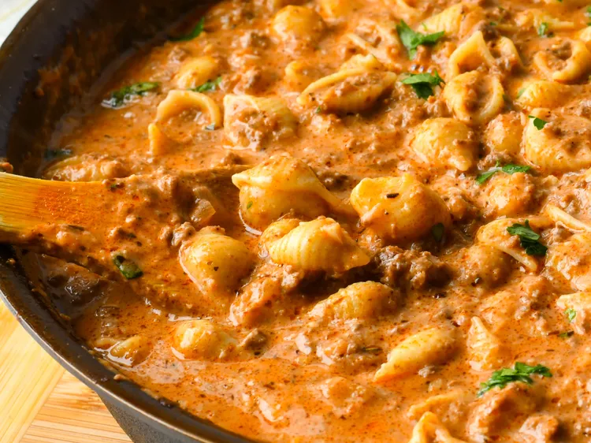

Beef and Shells

A one-pot dish of beef and shell pasta
pasta and beef, in a creamy, beefy tomato and extra-sharp Cheddar sauce
You'll turn a humble pound of ground beef into a family-friendly dinner that is all homemade.
Ingredients
- 8 ounces medium pasta shells
- 1 tablespoon olive oil
- 1 pound ground beef
- 1/2 medium white onion, finely diced
- 2 cloves garlic, minced
- 2 teaspoons Italian seasoning
- 2 tablespoons all-purpose flour
- 2 cups beef stock
- 2 (8 ounce) cans tomato sauce
- 3/4 cup half-and-half
- 2 cups shredded extra-sharp Cheddar cheese
- salt and freshly ground black pepper to taste
Steps
- Bring a large pot of salted water to a boil. Add pasta and cook for 8 minutes. Drain and set aside.
- In a heavy-bottomed pot, heat olive oil over medium heat. Add ground beef and break it up with the back of a spoon while it browns.
- Add onions to the pot and cook, stirring, until they begin to soften, about 3 minutes.
- Mix in garlic and Italian seasoning. Cook and stir for 30 seconds.
- Sprinkle flour on top and stir. The mixture will be dry.
- Slowly whisk in beef broth, then add tomato sauce. Whisk until smooth. Taste and season with salt and pepper.
- Bring sauce to a boil, reduce heat, and simmer, stirring frequently, until reduced and slightly thickened.
- Add beef, pasta shells, and half-and-half to sauce and mix until well combined.
- Stir in cheese until completely melted.
- Serve and enjoy
Home page